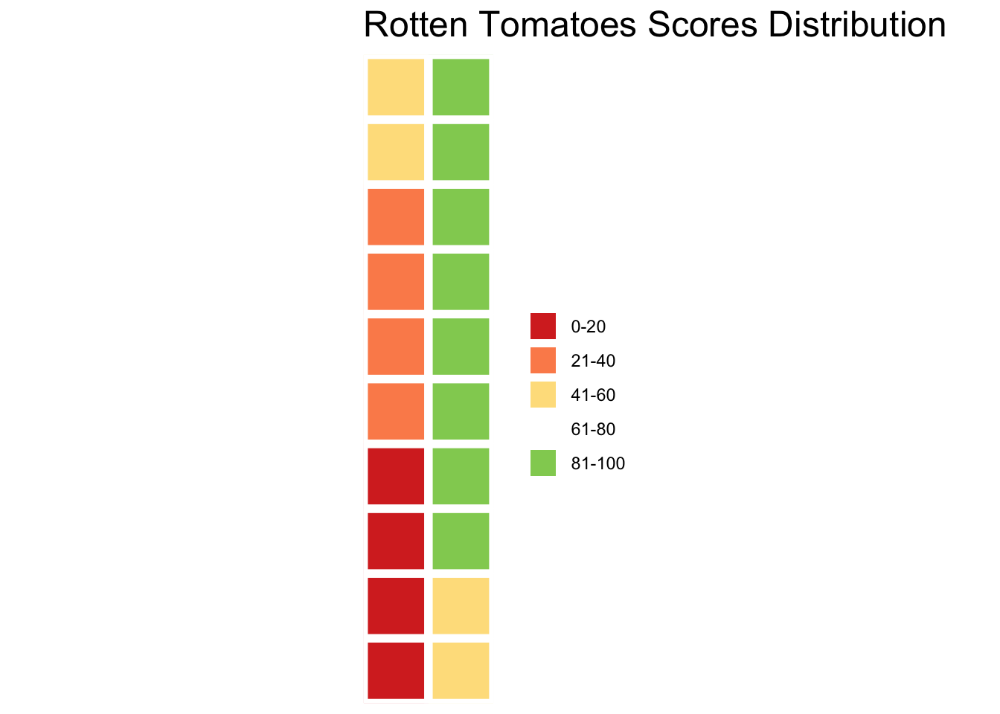
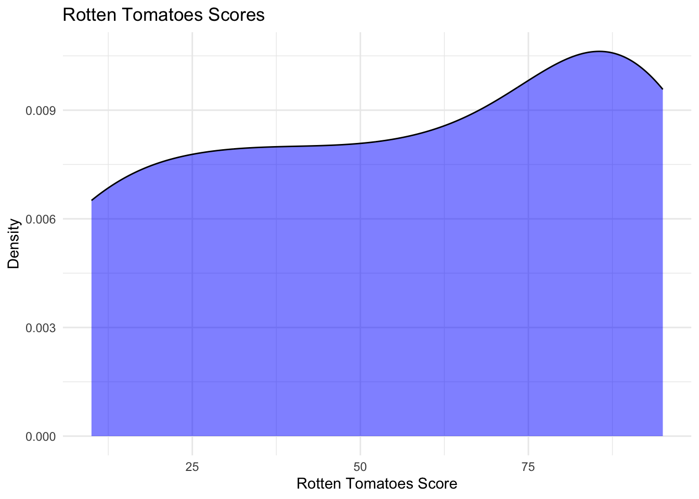
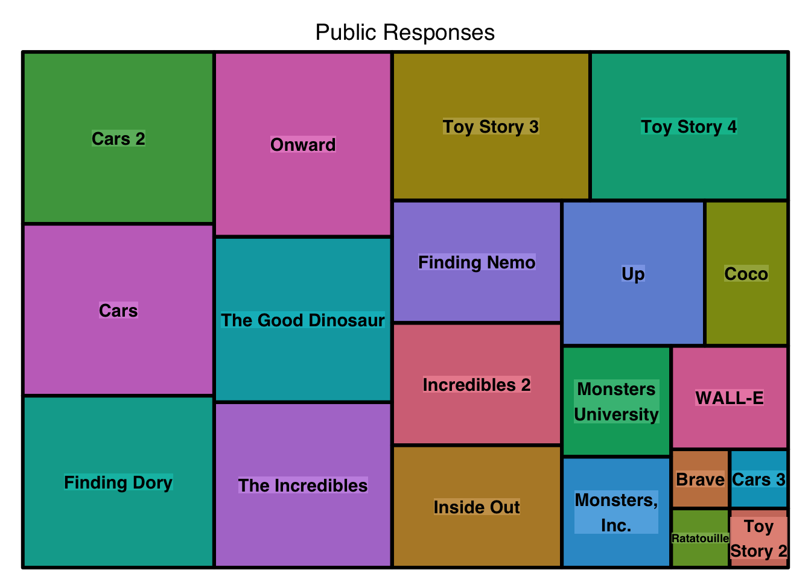
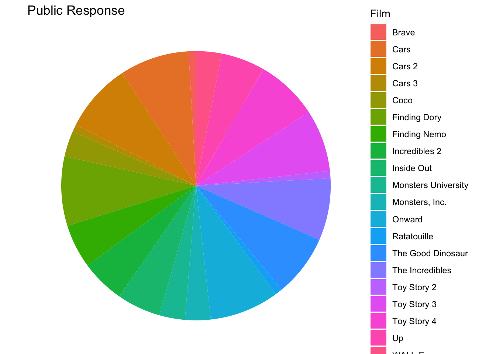

library(ggplot2)
library(ggridges) # ridge plots
library(ggbeeswarm) # beeswarm plots
library(GGally) # parallel coordinates plots## Registered S3 method overwritten by 'GGally':
## method from
## +.gg ggplot2library(ggpie) # pie charts
library(ggmosaic) # mosaic plots##
## Attaching package: 'ggmosaic'## The following object is masked from 'package:GGally':
##
## happylibrary(scatterpie) # scatter pies on map## scatterpie v0.2.4 Learn more at https://yulab-smu.top/library(waffle) # for waffle plots
library(DescTools) # for converting table to long
library(treemap) # for tree maps
# Using R
# Option 1: tidytuesdayR R package
install.packages("tidytuesdayR")##
## The downloaded binary packages are in
## /var/folders/zl/6grbynh575vc64243h95lqhh0000gn/T//RtmpC5lkUG/downloaded_packagestuesdata <- tidytuesdayR::tt_load('2025-03-11')## ---- Compiling #TidyTuesday Information
## for 2025-03-11 ----## --- There are 2 files available ---
##
##
## ── Downloading files ─────────────────────
##
## 1 of 2: "pixar_films.csv"
## 2 of 2: "public_response.csv"public_response <- tuesdata$public_responseclean_data <- na.omit(public_response)
public_response_c <- clean_data
print(public_response_c)## # A tibble: 20 × 5
## film rotten_tomatoes metacritic cinema_score critics_choice
## <chr> <dbl> <dbl> <chr> <dbl>
## 1 Toy Story 2 100 88 A+ 100
## 2 Monsters, Inc. 96 79 A+ 92
## 3 Finding Nemo 99 90 A+ 97
## 4 The Incredibles 97 90 A+ 88
## 5 Cars 74 73 A 89
## 6 Ratatouille 96 96 A 91
## 7 WALL-E 95 95 A 90
## 8 Up 98 88 A+ 95
## 9 Toy Story 3 98 92 A 97
## 10 Cars 2 40 57 A- 67
## 11 Brave 78 69 A 81
## 12 Monsters University 80 65 A 79
## 13 Inside Out 98 94 A 93
## 14 The Good Dinosaur 76 66 A 75
## 15 Finding Dory 94 77 A 89
## 16 Cars 3 69 59 A 66
## 17 Coco 97 81 A+ 89
## 18 Incredibles 2 93 80 A+ 86
## 19 Toy Story 4 97 84 A 94
## 20 Onward 88 61 A- 79# Example structure of `public_response` dataset
public_response_c <- data.frame(
Film = c("Toy Story 2", "Monsters, Inc.", "Finding Nemo", "The Incredibles", "Cars", "Ratatouille", "WALL-E", "Up", "Toy Story 3", "Cars 2", "Brave", "Monsters University", "Inside Out","The Good Dinosaur", "Finding Dory", "Cars 3", "Coco", "Incredibles 2", "Toy Story 4", "Onward"),
Score = c(10, 35, 60, 85, 95) # Rotten Tomatoes scores
)
# Group scores into ranges
public_response_c$Score_Range <- cut(
public_response_c$Score,
breaks = c(0, 20, 40, 60, 80, 100),
labels = c("0-20", "21-40", "41-60", "61-80", "81-100"),
include.lowest = TRUE
)
# Count the number of films in each range
waffle_data <- as.data.frame(table(public_response_c$Score_Range))
names(waffle_data) <- c("Score_Range", "Count")
print(waffle_data)## Score_Range Count
## 1 0-20 4
## 2 21-40 4
## 3 41-60 4
## 4 61-80 0
## 5 81-100 8library(waffle)
# Convert the data into a named vector for the waffle plot
waffle_vector <- setNames(waffle_data$Count, waffle_data$Score_Range)
# Create the waffle plot
waffle_plot <- waffle(
parts = waffle_vector,
rows = 10, # Number of rows in the waffle grid
colors = c("#D73027", "#FC8D59", "#FEE08B", "#D9EF8B", "#91CF60"),
title = "Rotten Tomatoes Scores Distribution"
)
print(waffle_plot)
ggplot(public_response_c, aes(x = Score)) +
geom_density(fill = "blue", alpha = 0.5) +
labs(
title = "Rotten Tomatoes Scores",
x = "Rotten Tomatoes Score",
y = "Density"
) +
theme_minimal()
Tree Map!
# Install the treemap package
install.packages("treemap")##
## The downloaded binary packages are in
## /var/folders/zl/6grbynh575vc64243h95lqhh0000gn/T//RtmpC5lkUG/downloaded_packages# Load the library
library(treemap)
# Create the treemap
treemap(public_response_c,
index = c("Film", "Score_Range"), # Hierarchy
vSize = "Score", # Size of rectangles
title = "Public Responses") # Title
Pie Chart
# Create pie chart
ggplot(public_response_c, aes(x = "Film", y = Score, fill = Film)) +
geom_bar(stat = "identity", width = 1) +
coord_polar("y", start = 0) +
labs(title = "Public Response") +
theme_void() # Removes unnecessary axes and gridlines